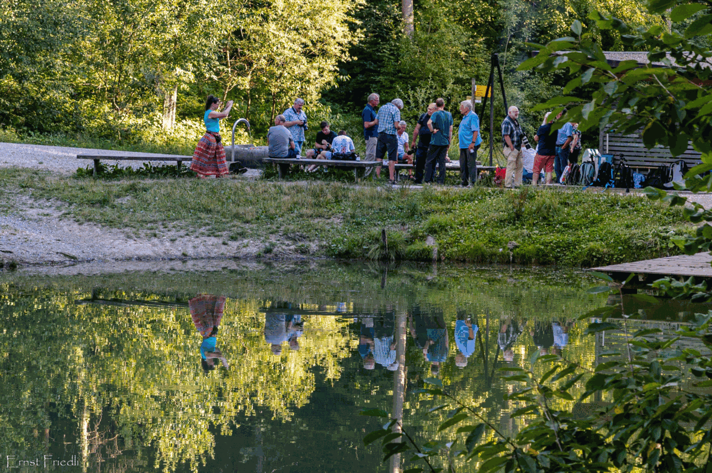
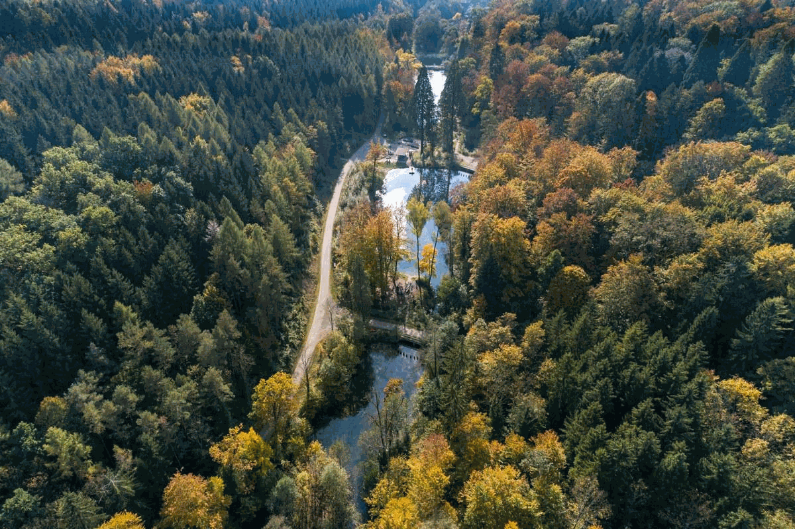
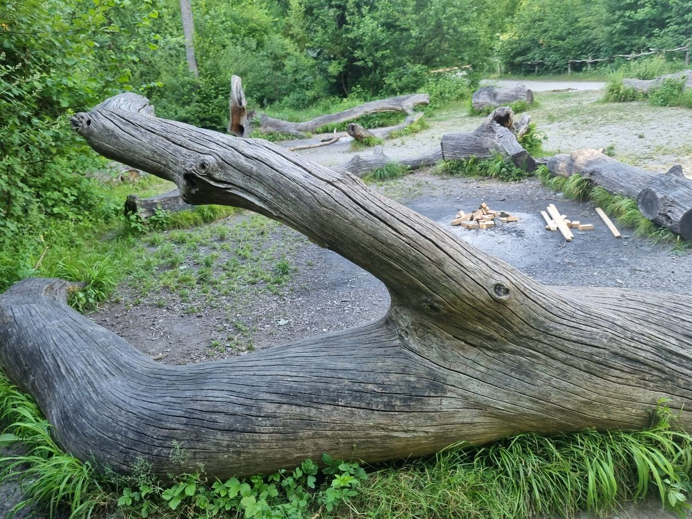
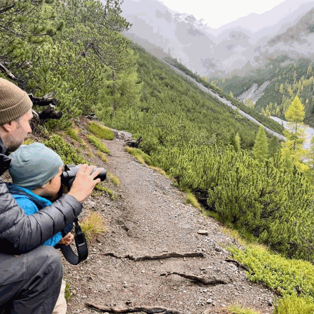

Kantonsrätin aus Winterthur · bestätigte Stimme
Nora Ernst
«Meine Kinder sind grosse Kügelibahn-Fans. Bisher kennen wir sie nur aus den Ferien - eine in Winterthur zu haben wäre grossartig.»
Bei den Walcheweihern gibt es bereits einen schönen Ort zum Spielen. Wir möchten ihn mit einer naturnahen Holzkugelbahn ergänzen – mit Kugelrinnen, die direkt in vorhandene Baumstämme geschnitzt werden.

Aus einfachen, bereits liegenden Baumstämmen soll ein naturnaher Spielort entstehen: Die Kugel rollt nicht über eine Plastikbahn, sondern durch Rinnen im Holz.
1. Geeignete Stämme auswählen. Gemeinsam mit dem Forstdienst wird geklärt, welche vorhandenen Baumstämme am Walcheweiher sich dafür eignen.
2. Kugelrinnen ins Holz arbeiten. Die Idee ist, Rinnen und mögliche Kurven direkt in das Holz zu schnitzen. Wie die einzelnen Elemente genau aussehen, wird bei der Detailplanung entschieden.
3. Die Kugel rollen lassen. Kinder können die Holzkugeln starten, ihnen folgen und immer wieder neue Wege entdecken.
Die handwerkliche Umsetzung wurde mit dem Forstdienst der Stadt Winterthur vorbesprochen. Gestaltung, Umfang und weitere Voraussetzungen sind noch nicht definitiv festgelegt; sie hängen auch von der Finanzierung ab.
Mehr zum Projektstand →Menschen aus Winterthur erzählen, was ihnen an der Idee gefällt. Zwei Stimmen sind bereits persönlich freigegeben; weitere sind angefragt.
«Meine Kinder sind grosse Kügelibahn-Fans. Bisher kennen wir sie nur aus den Ferien - eine in Winterthur zu haben wäre grossartig.»

«Wenn die Kugel einmal rollt, gibt es kein Halten mehr! Eine Reise beginnt – genauso fest in der Bahn wie im Kopf.»
Auszug aus dem freigegebenen Zitat.

Foto: © Mareycke Frehner
Stimme angefragt – ein Statement liegt noch nicht zur Veröffentlichung vor.

Stimme angefragt – ein Statement liegt noch nicht zur Veröffentlichung vor.
Der Walcheweiher ist unser Standort. Hier treffen sich schon heute Familien zum Spazieren, Spielen und Grillieren. Eine kleine Kügelibahn würde wunderbar dazu passen.





Die Bilder zeigen den heutigen Ort. Welche Stämme sich für die Kugelrinnen eignen, ist noch zu klären.
Hier siehst du die Umgebung rund um den Platz, an dem die erste Kügelibahn entstehen soll. So bekommst du einen Eindruck davon, wie der Ort heute aussieht.
Originalvideo vom Walcheweiher – noch ohne Kügelibahn.
Private Initiative; mit dem Forstdienst der Stadt Winterthur vor Ort besprochen und vorabgestimmt. Der Forstdienst hat Bereitschaft zur handwerklichen Umsetzung signalisiert. Umfang und weitere Voraussetzungen werden vor dem Start abgestimmt.
Wir bereiten die Spendensammlung für das erste Ziel von CHF 5’000 vor. Noch kein öffentlich bestätigter Spendenstand.
Geplanter Start Anfang 2027, abhängig von Finanzierung und letzten Absprachen.
Eine Idee aus Winterthur, die mit viel freiwilligem Einsatz wachsen soll. Wir zeigen offen, wer sich wofür engagiert.

Ich lebe mit meiner Familie in Winterthur. Mein Sohn liebt Kügelibahnen und wir verbringen gerne Zeit draussen in der Natur. So entstand die Idee: Warum nicht eine Kügelibahn am Walcheweiher? Ein Ort, an dem mein Sohn und viele andere Kinder spielerisch den Wald entdecken und die Natur erleben können.
Beruflich arbeite ich beim WWF im Fundraising. Die Kügelibahn ist für mich ein echtes Herzensprojekt, für das ich mich ehrenamtlich mit viel Freude engagiere. Besonders schön finde ich, wenn aus einer persönlichen Idee gemeinsam mit anderen etwas entsteht, das vielen Menschen Freude macht.
Es handelt sich um eine private Initiative, welche mit dem Forstdienst der Stadt Winterthur vorabgestimmt ist.
Der Forstdienst hat den Standort mitbesichtigt und sich positiv zum Projekt geäussert. Die handwerkliche Umsetzung durch den Forstdienst ist grundsätzlich vorgesehen; die genaue Ausführung, der Umfang und allfällige formelle Freigaben werden vor Beginn festgelegt. Die Initiative bleibt privat und ist kein offizielles Projekt der Stadt.
Von der ersten Idee bis zur ersten Kugel, die rollt.
Wir möchten mindestens CHF 5’000 sammeln, um mit dem Forstdienst der Stadt Winterthur die ersten Kugelrinnen bei den Walcheweihern umzusetzen. Der Umfang richtet sich nach den verfügbaren Mitteln.
Falls genügend Mittel und die nötigen Absprachen vorliegen, sollen erste Rinnen geschnitzt werden.
Die ersten Spielelemente entstehen Schritt für Schritt. Ein genauer Eröffnungstermin steht noch nicht fest.
Alle Unterstützer:innen erhalten auf Wunsch Updates und eine nachvollziehbare Abrechnung.
Je mehr Menschen von der Idee erfahren, desto besser. Teile die Seite mit Freund:innen, Familien, Quartiervereinen und Menschen, die sich für Winterthur engagieren.